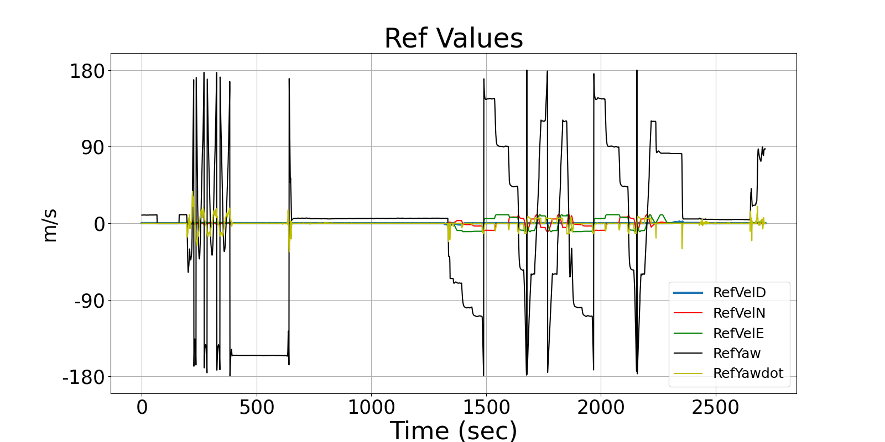

Integrating Runtime Verification into an
Automated UAS Traffic Management System
Matthew Cauwels, Abigail Hammer, Benjamin Hertz, Phillip H. Jones, Kristin Y. Rozier
This webpage contains supplementary specifications for "Integrating Runtime Verification into an
Automated UAS Traffic Management System" by M. Cauwels, A. Hammer, B. Hertz, P. H. Jones, and K. Y. Rozier
CS_UAS_1
Specification Description
The UAS cmd values RefVelN, RefVelE, RefVelD, RefYaw, and RefYawdot should be 0 when Subphase is Test Actuators or when Phase is in Test at all instances.
Signals Required
RefVelN, RefVelE, RefVelD, RefYaw, RefYawdot, Subphase, Test
Boolean Conversion of Signals to Atomic Inputs
RefVelN_eq_0: RefVelN==0
RefVelE_eq_0: RefVelE == 0
RefVelD_eq_0: RefVelD == 0
RefYaw_eq_0: RefYaw == 0
RefYawdot_eq_0: RefYawdot == 0
Phase_eq_Test: Phase == "Test"
Subphase_eq_TestActuators: Subphase == "Test Actuators"MLTL Specification
☐[0,M] ((Phase_eq_Test ∨ Subphase_eq_TestActuators) → (RefVelN_eq_0 ∧ RefVelE_eq_0 ∧ RefVelD_eq_0 ∧ RefYaw_eq_0 ∧ RefYawdot_eq_0))
Fault Explanation
UAS is moving when in testing phase or test actuators subphase.
Additional Notes
Based strictly off of the 2018-01-02-telemetry.csv file.
Until such a time that a test flight with the Vapor 55 can be completed, this specification is unable to be fully tested.
Figures
